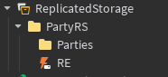
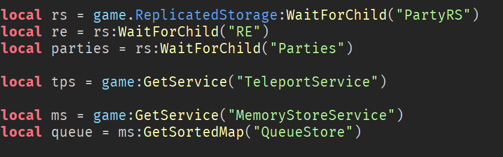
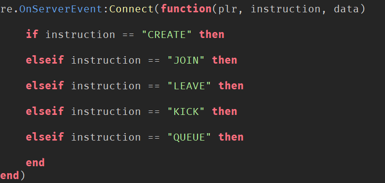
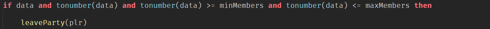
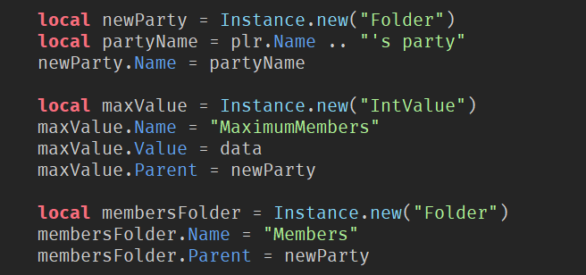
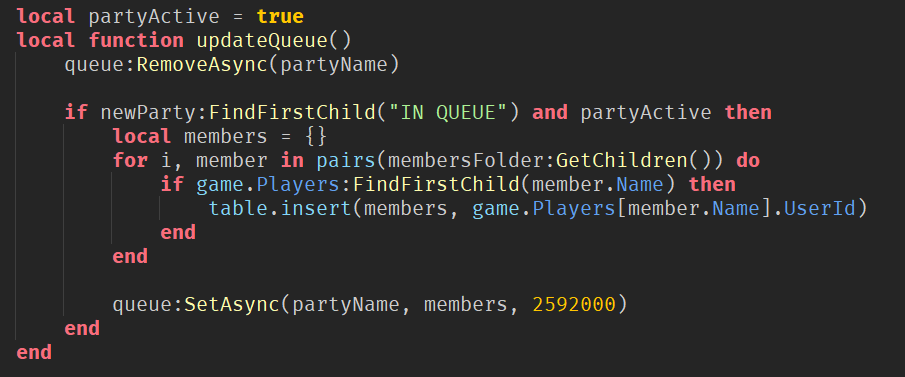
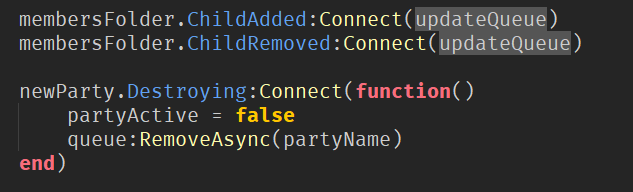
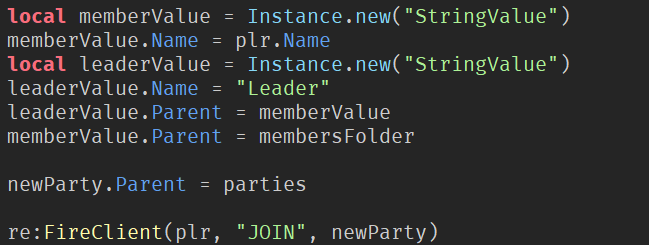

GLOBAL MATCH MAKING GLOBAL MATCH MAKING GLOBAL MATCH MAKING GLOBAL MATCH MAKING GLOBAL MATCH MAKING GLOBAL MATCH MAKING GLOBAL MATCH MAKING GLOBAL MATCH MAKING
GLOBAL MATCH MAKING GLOBAL MATCH MAKING GLOBAL MATCH MAKING GLOBAL MATCH MAKING GLOBAL MATCH MAKING GLOBAL MATCH MAKING GLOBAL MATCH MAKING GLOBAL MATCH MAKING
GLOBAL MATCH MAKING GLOBAL MATCH MAKING GLOBAL MATCH MAKING GLOBAL MATCH MAKING GLOBAL MATCH MAKING GLOBAL MATCH MAKING GLOBAL MATCH MAKING GLOBAL MATCH MAKING
GLOBAL MATCH MAKING GLOBAL MATCH MAKING GLOBAL MATCH MAKING GLOBAL MATCH MAKING GLOBAL MATCH MAKING GLOBAL MATCH MAKING GLOBAL MATCH MAKING GLOBAL MATCH MAKING
GLOBAL MATCH MAKING GLOBAL MATCH MAKING GLOBAL MATCH MAKING GLOBAL MATCH MAKING GLOBAL MATCH MAKING GLOBAL MATCH MAKING GLOBAL MATCH MAKING GLOBAL MATCH MAKING
GLOBAL MATCH MAKING GLOBAL MATCH MAKING GLOBAL MATCH MAKING GLOBAL MATCH MAKING GLOBAL MATCH MAKING GLOBAL MATCH MAKING GLOBAL MATCH MAKING GLOBAL MATCH MAKING
GLOBAL MATCH MAKING GLOBAL MATCH MAKING GLOBAL MATCH MAKING GLOBAL MATCH MAKING GLOBAL MATCH MAKING GLOBAL MATCH MAKING GLOBAL MATCH MAKING GLOBAL MATCH MAKING
GLOBAL MATCH MAKING GLOBAL MATCH MAKING GLOBAL MATCH MAKING GLOBAL MATCH MAKING GLOBAL MATCH MAKING GLOBAL MATCH MAKING GLOBAL MATCH MAKING GLOBAL MATCH MAKING
GLOBAL MATCH MAKING GLOBAL MATCH MAKING GLOBAL MATCH MAKING GLOBAL MATCH MAKING GLOBAL MATCH MAKING GLOBAL MATCH MAKING GLOBAL MATCH MAKING GLOBAL MATCH MAKING
GLOBAL MATCH MAKING GLOBAL MATCH MAKING GLOBAL MATCH MAKING GLOBAL MATCH MAKING GLOBAL MATCH MAKING GLOBAL MATCH MAKING GLOBAL MATCH MAKING GLOBAL MATCH MAKING
GLOBAL MATCH MAKING GLOBAL MATCH MAKING GLOBAL MATCH MAKING GLOBAL MATCH MAKING GLOBAL MATCH MAKING GLOBAL MATCH MAKING GLOBAL MATCH MAKING GLOBAL MATCH MAKING
GLOBAL MATCH MAKING GLOBAL MATCH MAKING GLOBAL MATCH MAKING GLOBAL MATCH MAKING GLOBAL MATCH MAKING GLOBAL MATCH MAKING GLOBAL MATCH MAKING GLOBAL MATCH MAKING
GLOBAL MATCH MAKING GLOBAL MATCH MAKING GLOBAL MATCH MAKING GLOBAL MATCH MAKING GLOBAL MATCH MAKING GLOBAL MATCH MAKING GLOBAL MATCH MAKING GLOBAL MATCH MAKING
GLOBAL MATCH MAKING GLOBAL MATCH MAKING GLOBAL MATCH MAKING GLOBAL MATCH MAKING GLOBAL MATCH MAKING GLOBAL MATCH MAKING GLOBAL MATCH MAKING GLOBAL MATCH MAKING
GLOBAL MATCH MAKING GLOBAL MATCH MAKING GLOBAL MATCH MAKING GLOBAL MATCH MAKING GLOBAL MATCH MAKING GLOBAL MATCH MAKING GLOBAL MATCH MAKING GLOBAL MATCH MAKING
GLOBAL MATCH MAKING GLOBAL MATCH MAKING GLOBAL MATCH MAKING GLOBAL MATCH MAKING GLOBAL MATCH MAKING GLOBAL MATCH MAKING GLOBAL MATCH MAKING GLOBAL MATCH MAKING
In this tutorial i'll be going over how to make a CROSS SERVER global match making system with parties and solo queue, Just like you see in almost all other oniline games like CS:GO, Overwatch and many many more
This tutorial will also asume that you have an intermidet understanding or Roblox Studio and LUAU
NOTE: Quite a bit of this script is not originally written by me. but i found no tutorial on it and ive changed some stuff. I also have dont know who the original coder of this is since i didint get it from the original source. if you know please wirte to me and ill leave credit or remove this tutorial if needed
First create a script called "Party Server" in the Server Script Service

After that we will be creating some varibles at the tope of the script

- Place id will be the id of the place where you want the actuall game to take place
- Min queue is the min amount of players needed to start putting togheter a game. Max Queue is the max amount of players in the actuall game
- Time after is the amount of time we will wait for the server to fill up after rge min queue amount has been reached
- minMembers is the minimum amount of players in a party that can queue, so if you want to force peapole to queue up with 3 peapole before being able to play
- maxMemebers is the maximum amount of members in one given party
After that go ahead and create a PartyRs folder in replicated storage with a RE and a praties folder like this:

Then we will want to get some libraries and the RE

here we will go ahead and get both the
TeleportService and the
MemoryStoreService.
We also create a queue var that links with "QueueStore" If your unsure about the
Datastores
in roblox work or what the
GetSortedMap
call dose then i'd recommend reading up on that
Then we will go ahead and start maping out if statments for the main function

How this works is we pass a string called "instructions" to the server from and with that we do diffrent functionalities.
Its done like this so that we only have to use on Remote Event for the entire thing insted of six diffrent once. reducing cluter
What these do is pretty self explanatory:
-Create makes a passed party
-Join joins a passed party
-Leave leaves a passed party
-Kick kicks a passed player from the passed party
-Queue queues a passed party
Lets start by putting a if statment in the "CREATE" section

This will check so that we are withing the Min and Max memebers in order to create a party
We will also pass a LeaveParty Function in order to make sure no player is in two parties(we will make this functions soon)
Then we will start instancing some stuff

First we instance a new folder. This folder will keep all the players that are in the party we are creating
We will then instance
IntValue
under the party folder.This will be used to set how many peapole can join the Party
We then also create another folder under the main party folder. This folder will directly keep track of the players in the party
After that we will nest a function called updateQueue still in the "CREATE" section of the main function

first we take the queue var that we created before and remove the partyname from it in order to not have duplicates
Then we will check if party active and if we find "IN QUEUE" as a child of the party we have made. (more on this later)
if we are in queue and our party is active then we will go ahead and create a members table that will then include all the children of the memeber folder from the party
Then we will add back the current party and its members to the queue var
NOTE: seeing as we want to queue cross servers we need to store what parties are queuing in a datastore so that all server instances can read from it. This works beacuse roblox auto syncs all Datastores cross server. There are other ways of doing this that may be more effective if you are reaching the
Limits
of the datastore but for this tutorial we will be using this method
After that we will call the updateQueue Function when either a child of the members folder is added or removed

We will also completely remove the party if the actuall folder gets destroyed (Will we get back to this later)
Now we have officaly created a new party. all we need to do now is make the client that created this party join his own party. and be the leader of the party

we also fire "JOIN" to the client and the party to join. more on this on the Client Side script section